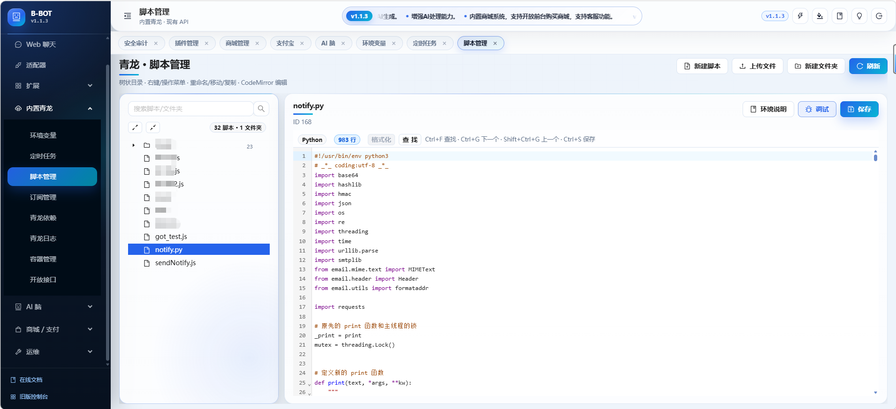
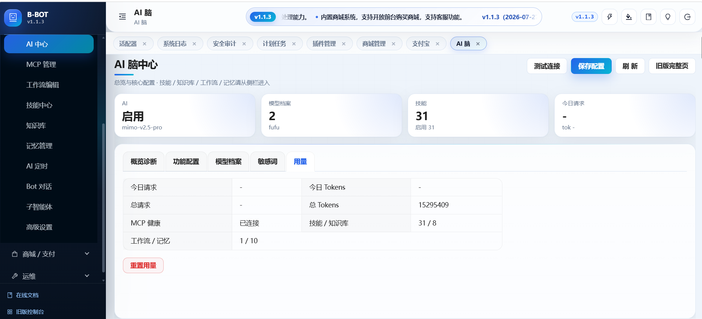

Scripts in one place
脚本、任务与环境，一处管理。
从计划执行到依赖安装和历史日志，日常脚本运维不再离开 B-BOT。
- JS / Python QLEnv
- 按名称读写 env
- 定时任务
- 脚本管理
- 依赖管理
- 日志追踪
01 / Plugins
使用 Python 或 JavaScript，将业务规则、外部接口与机器人动作封装为可调试、可复用的插件。
01 规则命中
02 读取 Bucket 数据
03 执行业务逻辑
04 回复或主动推送触发规则通过
权限检查通过
Webhook 返回成功
- 旧回复逻辑
+ 新增多轮输入
保存后尝试热重载
选择 Python、JavaScript 或兼容 ATM 的写法，使用 Bucket、权限、多轮输入、主动推送与插件 Webhook。
在调试页验证触发和输出，借助 AI 辅助编写，并通过行级 diff 检查实际变更。
保存后尝试热重载，继续由规则或 Webhook 触发；结果可在面板和日志中确认。
02 / Adapters
从聊天平台到企业系统 Webhook，消息先经过范围与规则判断，再被交给插件、工作流或 AI Agent。
QQ Bot、企业微信、Telegram、wxclaw 等适配器支持配置多账号。
一个适配器可绑定一个子智能体；未绑定时自动回退到主智能体。
B-BOT 为出站回调生成签名，业务系统据此验签。
跨渠道客服 多个聊天渠道进入同一处理链，并按适配器分配 Agent。
企业系统接入 CRM 或工单系统通过 Custom Webhook 入站，结果经签名回调返回。
03 / Built-in QingLong
环境变量、定时任务、脚本、依赖和日志在同一套管理台中运行，无需额外切换到独立脚本平台。

Scripts in one place
从计划执行到依赖安装和历史日志，日常脚本运维不再离开 B-BOT。
04 / AI Brain
让触发、模型、工具与知识协同运行，再将结果回复到当前会话，或推送到已支持推送的渠道。

对话 · AI 定时 · 工作流
启用 · 降级 · 故障转移
技能 · MCP · 知识库
回复 · 支持的渠道推送 · Bot-Chat
Intelligence stack
Deploy
启动后打开 Web 管理台，挂载数据目录即可持久化插件、适配器、脚本与 AI 配置。
docker run -d \
--name bbot \
--restart unless-stopped \
-p 5000:5000 \
-p 8888:8888 \
-v /var/run/docker.sock:/var/run/docker.sock \
-v /your/data/path:/app/mount \
241793/b-bot:latest部署完成后，浏览器打开 http://服务器IP:5000。